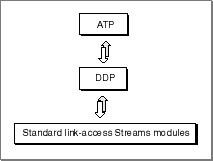

Legacy Document
Important: The information in this document is obsolete and should not be used for new development.
Important: The information in this document is obsolete and should not be used for new development.


About ATP
The AppleTalk Transaction Protocol (ATP) offers a simple means of reliably transferring small amounts of data across a network. Using this protocol, one endpoint requests information from another endpoint that possesses the ability to respond to the request. This means that ATP is well-suited to a client-server relation.ATP is based on the concept of a transaction. In a transaction, one endpoint, called the requester, makes a request of another endpoint, called the responder, to perform a service and return a response.
You can implement ATP client applications in the following two ways:
ATP is a direct client of DDP, and it adds reliable delivery of data to the transport delivery services that DDP provides. ATP ensures that data is delivered without error or packet loss. Figure 17-1 shows how the ATP endpoint provider encompasses its underlying delivery protocol and link-access Streams modules.
- You can write a single application that handles both the requester and responder actions of an ATP transaction and run that application on two networked nodes. This method allows each application to act as either the requester or the responder. However, while each side has the capacity to initiate a transaction, only one side can control the communication during a single transaction.
- You can write two applications, one application that implements the requester part of a transaction and another application that implements the responder side. This model lends itself well to a client-server relation such as PAP, in which many nodes on a network run the requester application (client), while one or more nodes run the responder application (server). One server can respond to transaction requests from various clients.
Figure 17-1 The ATP endpoint provider's underlying delivery mechanism
